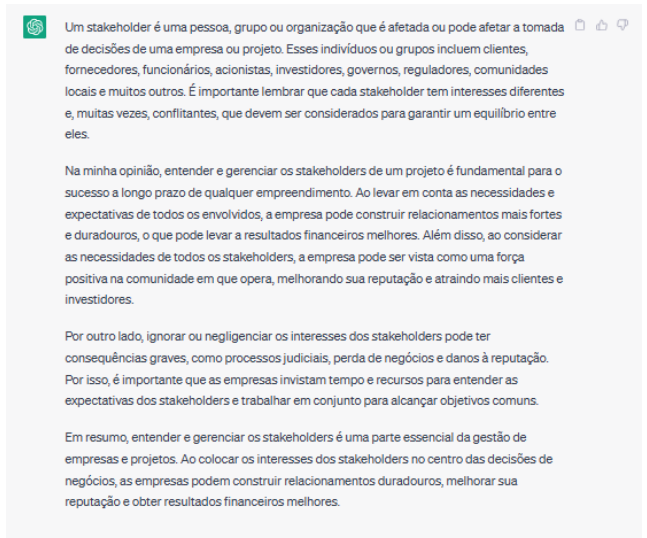

Marcos Vinícius - AI-APW-01
Stakeholders, partes interessadas em português, se referem a toda pessoa e/ou organização que serão impactados pelas ações de uma empresa. Podendo ser desde administradores e funcionários até os clientes e comunidades. Eu acho que compreender a importância dos stakeholders essencial para a realização de um projeto porque, desta forma, ajuda a tomar decisões que considerem os interesses de todos os stakeholders pois, conhecendo quais os interesses apresentados, ajuda a entender como cumprir objetivos e realizar ações de forma estratégica para atingi-los com maior chance de um bom resultado. Existem dois tipos de stakeholders: os primários e os secundários. Os primários são as partes interessadas internas, ou seja, que atuam diretamente dentro da organização, por exemplo, funcionários e colaboradores. Já os secundários, são as partes interessadas externas, que influenciam a empresa de forma interesse, podendo citar como exemplo os clientes e imprensa.
Na imagem, houve uma falha na comunicação entre os stakeholders na realização do projeto. O cliente não sabia muito bem o que queria ou como descrever. E assim cada parte da equipe foi realizando o projeto de forma diferente e o cliente não obteve um resultado esperado e foi cobrado de forma indevida. Ou seja, mesmo com as partes interessadas no projeto, elas não foram passadas e compreendidas de forma correta, levando ao resultado insatisfatório e um trabalho feito seguindo orientações insuficientes e incorretas.
